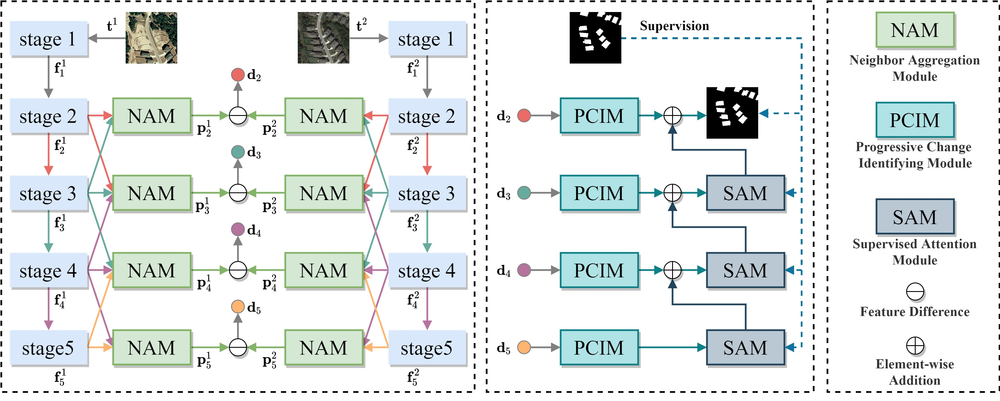
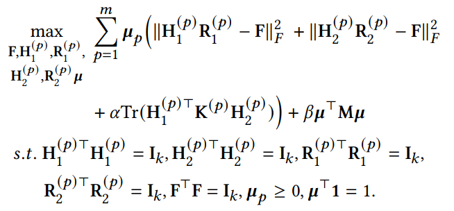
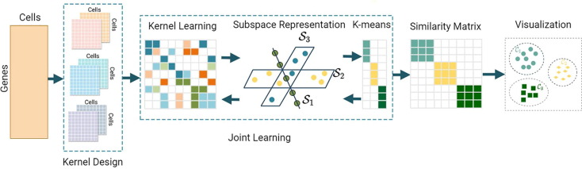
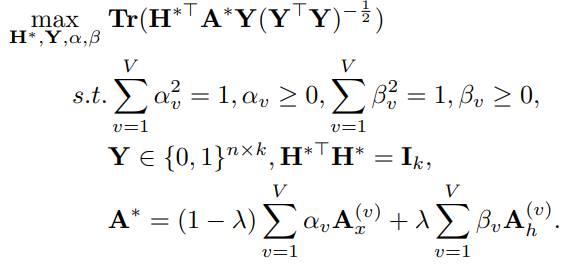
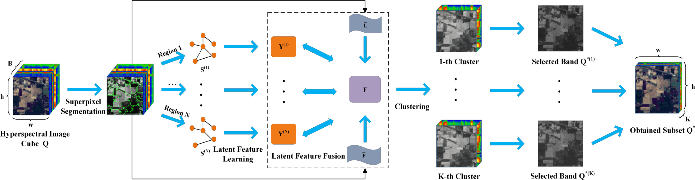
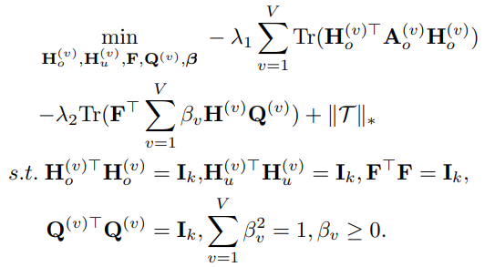
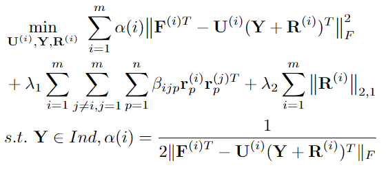

Zhenglai Li's Homepage

|
Zhenglai Li (李正来)
|
Biography
I am a Ph.D. student in School of Computer Science, China University of Geosciences, Wuhan
(CUG) since 2021, supervised by Prof. Chang Tang.
Previously, I received B.S. and M.S. from China University of Geosciences, Wuhan, in 2018 and 2021,
respectively.
My research interests include
News
- 2023.01, "Lightweight Remote Sensing Change Detection with Progressive Aggregation and Supervised Attention" has been accepted by IEEE Transactions on Geoscience and Remote Sensing.
Education
-
Ph.D. in China University of Geoscience (Wuhan),
School of Computer Science
2021.09-present
Supervisor: Prof. Chang Tang
-
M.S. in China University of Geoscience (Wuhan),
School of Computer Science
2018.09-2021.06
Supervisor: Prof. Chang Tang
-
B.S. in China University of Geoscience (Wuhan),
School of Geophysics and Geomatics
2014.09-2018.06
Publications
 |
Mutual Structure Learning for Multiple Kernel Clustering |
|  |
Lightweight Remote Sensing Change Detection with Progressive Aggregation and Supervised Attention |
 |
Remote Sensing Change Detection via Temporal Feature Interaction and Guided Refinement |
|  |
Efficient Multiple Kernel Clustering via Spectral Perturbation |
|  |
Unified K-means coupled self-representation and neighborhood kernel learning for clustering single-cell RNA-sequencing data |
|  |
Unified One-step Multi-view Spectral Clustering |
 |
High-order Correlation Preserved Incomplete Multi-view Subspace Clustering |
 |
Consensus Graph Learning for Multi-view Clustering |
|  |
Hyperspectral Band Selection via Region-aware Latent Features Fusion based Clustering |
|  |
Tensor-Based Multi-View Block-Diagonal Structure Diffusion for Clustering Incomplete Multi-View Data |
|  |
Diversity and Consistency Learning Guided Spectral Embedding for Multi-view Clustering |
Services
Peer Review:
-
IEEE Transactions on Multimedia
-
IEEE Transactions on Neural Networks and Learning Systems
-
Information Science
-
IEEE Transactions on Geoscience and Remote Sensing
-
IEEE Geoscience and Remote Sensing Letters